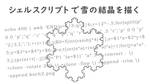
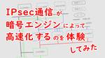
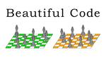

IIJ Engineers Blog
https://eng-blog.iij.ad.jp
IIJ Engineers Blogは、開発・運用の現場から、IIJのエンジニアが技術的な情報や取り組みについて 執筆する公式ブログです。
フィード
クラウドサービスを支える大規模メンテナンスの舞台裏
IIJ Engineers Blog
【IIJ 2024 TECHアドベントカレンダー 12/10の記事です】 優秀な寿司職人が毎日包丁のお手入れをし、競りで新鮮な魚介類を仕入れて、より良いお寿司を出すために日々研究をするのと同じように、...
4時間前
IIJ SOCと「運用」 18
18
IIJ Engineers Blog
【IIJ 2024 TECHアドベントカレンダー 12/9の記事です】 本記事ではIIJセキュリティオペレーションセンター（以下、IIJ SOC）における運用について、その概要をご説明します。本記事は...
1日前
IIJ Bootcamp 2024開催報告 – 6年目の開催報告 2
IIJ Engineers Blog
【IIJ 2024 TECHアドベントカレンダー 12/8の記事です】 色んな技術を触って欲しくて始めた大規模ハンズオン研修 IIJでは毎年、New Commerを対象としたビギナー向け研修として「I...
1日前
IIJ IoT米、2024年も作りました！ 1
IIJ Engineers Blog
【IIJ 2024 TECHアドベントカレンダー 12/7の記事です】 はじめに IIJのアグリ事業は水田の水管理のセンシングから始まり、ビニールハウスや露地の環境モニタリング、獣害対策、水利施設監視...
4日前
SSHでも二要素認証を使いたい 219
IIJ Engineers Blog
【IIJ 2024 TECHアドベントカレンダー 12/6の記事です】 今年のIIJアドベントカレンダーは「運用」がテーマということなので、運用に欠かせない必携ツール筆頭であるSSHを取り上げ、SSH...
4日前

シェルスクリプトで雪の結晶を描く 53
IIJ Engineers Blog
【IIJ 2024 TECHアドベントカレンダー 12/5の記事です】 はじめに アドベントカレンダーなのでクリスマスっぽいことをしましょう。ホワイトクリスマスには雪。ということで、六角形の雪の結晶の...
5日前

IPsec通信が暗号エンジンによって高速化するのを体験してみた 2
IIJ Engineers Blog
【IIJ 2024 TECHアドベントカレンダー 12/4の記事です】 2023年のアドベントカレンダーの記事としてIntel N100のミニPC上にSEIL/x86 Ayame （以下Ayame）を...
6日前

Beautiful Code 11
IIJ Engineers Blog
【IIJ 2024 TECHアドベントカレンダー 12/3の記事です】 人生の長い間に亘ってプログラムを書いてきた. 最初は大学院生の時, 記憶装置のない加減乗算だけの計算機を作り, 紙テープから数値...
7日前

Starlinkとhome 5Gを色々と比較してみました
IIJ Engineers Blog
【IIJ 2024 TECHアドベントカレンダー 12/2の記事です】 ブログを書くようになって、Starlink導入の相談を受ける機会が増えてきました。個人・法人に関わらずStarlinkに興味を持...
8日前
メールサービスにおけるAnsibleによるサーバ構成管理ツールの活用
IIJ Engineers Blog
こんにちは、こんばんは。ネットワーク本部で法人系メールサービスの運用をしている今村です。 サーバやネットワーク機器の管理の仕方は皆さん様々だと思います。 エクセルを使ってコンフィグを管理していたり、フ...
14日前